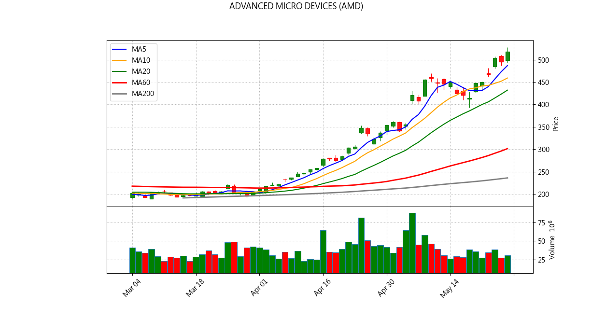
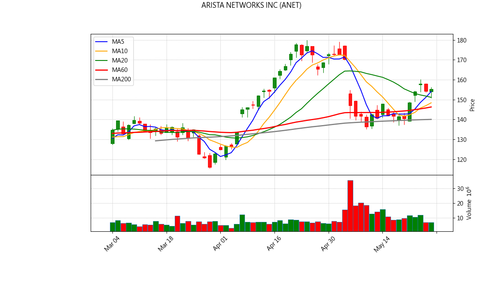
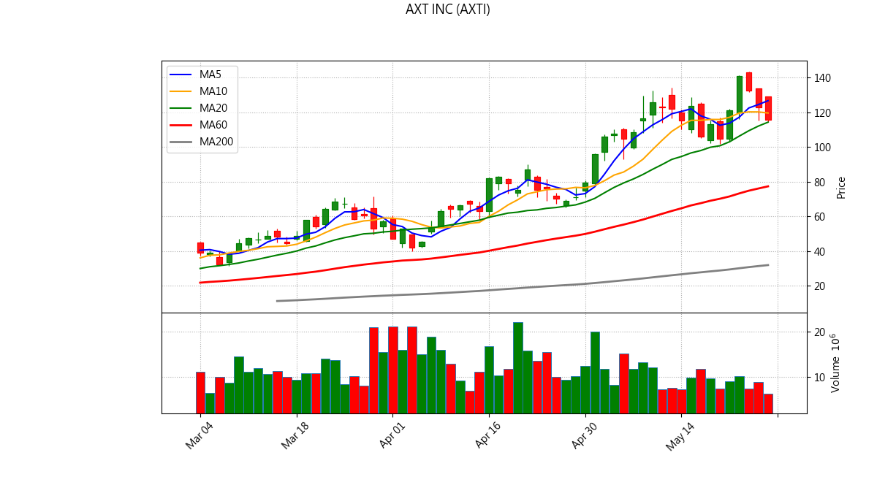
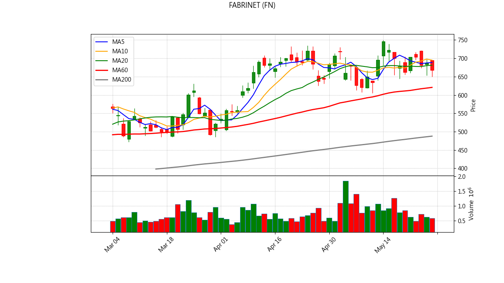
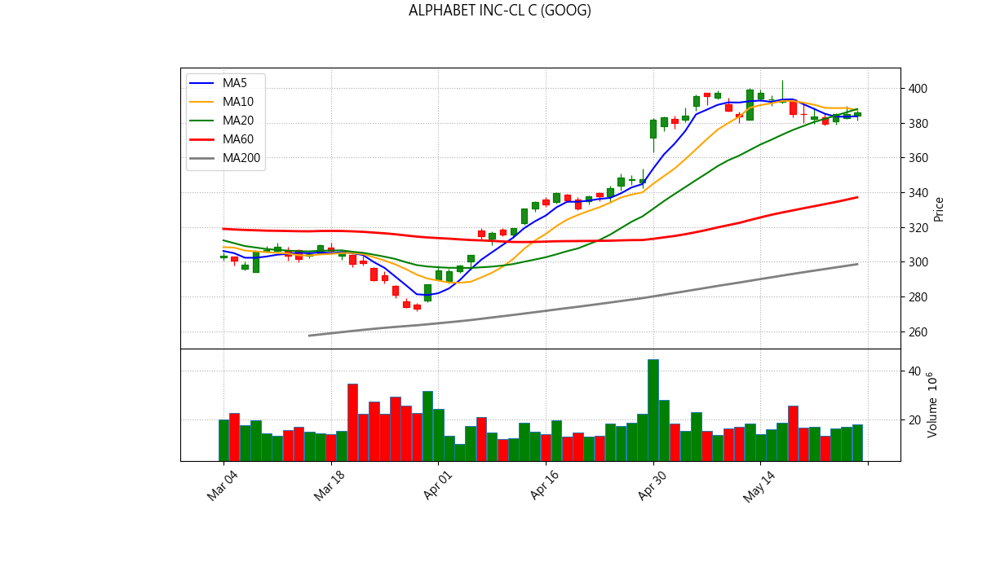
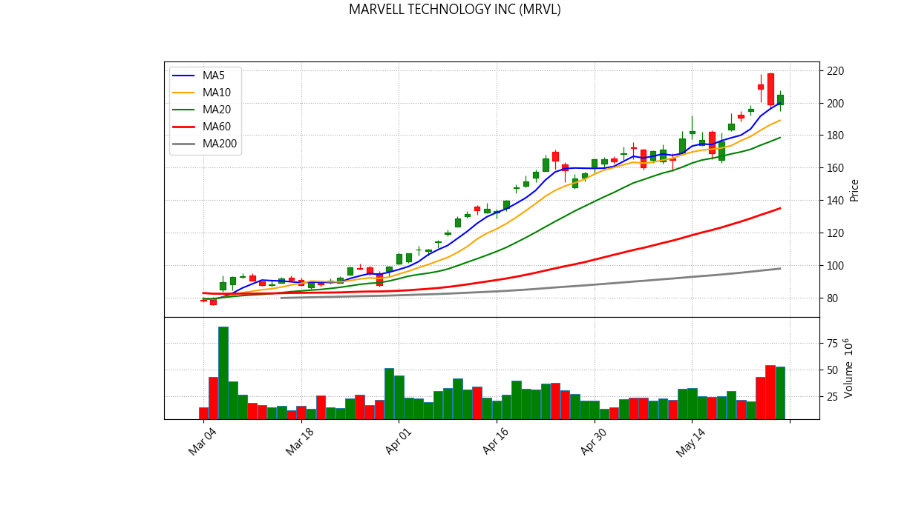
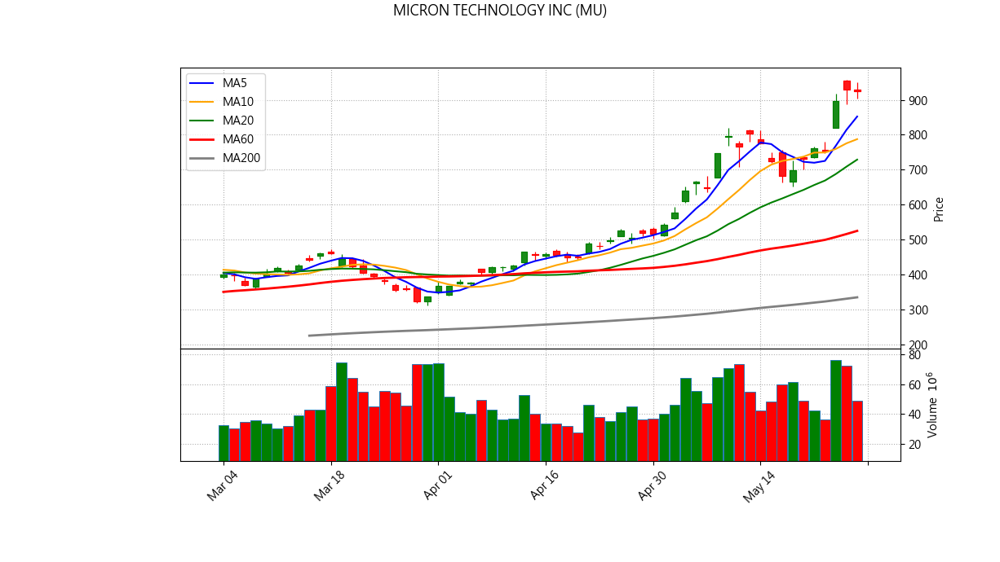
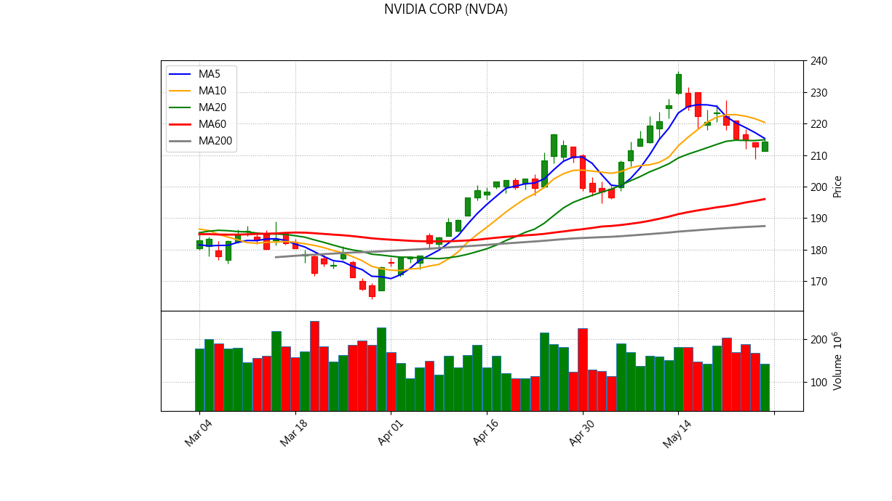
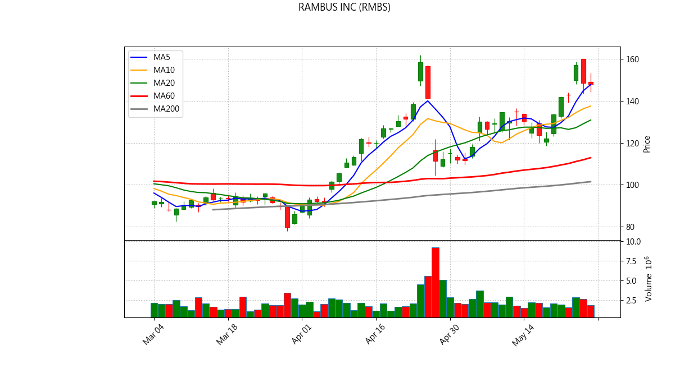

📊 NYSE/US Stock Inventory AI Diagnosis
Generated at: 2026-05-29 06:43:30
ADVANCED MICRO DEVICES (AMD)
Current Price: $518.09
💼 Portfolio Status
Avg Cost: $322.51
Quantity: 8
Unrealized P/L: $1,564.63
Return Rate: 60.64%
📋 Analysis Signals
✅ No major sell signals triggered.

✨ AI Comprehensive Diagnosis
ARISTA NETWORKS INC (ANET)
Current Price: $155.27
💼 Portfolio Status
Avg Cost: $145.10
Quantity: 17
Unrealized P/L: $172.94
Return Rate: 7.01%
📋 Analysis Signals
✅ No major sell signals triggered.

✨ AI Comprehensive Diagnosis
AXT INC (AXTI)
Current Price: $115.70
💼 Portfolio Status
Avg Cost: $109.57
Quantity: 30
Unrealized P/L: $183.78
Return Rate: 5.59%
📋 Analysis Signals
⚠️ 【Break below 5MA】Short-term weakness.
🚨 【Break below 10MA】Trend broken, consider exit.

FABRINET (FN)
Current Price: $667.95
💼 Portfolio Status
Avg Cost: $693.00
Quantity: 6
Unrealized P/L: $-150.32
Return Rate: -3.62%
📋 Analysis Signals
⚠️ 【Break below 5MA】Short-term weakness.
🚨 【Break below 10MA】Trend broken, consider exit.

ALPHABET INC-CL C (GOOG)
Current Price: $386.12
💼 Portfolio Status
Avg Cost: $329.63
Quantity: 16
Unrealized P/L: $903.78
Return Rate: 17.14%
📋 Analysis Signals
🚨 【Break below 10MA】Trend broken, consider exit.

✨ AI Comprehensive Diagnosis
MARVELL TECHNOLOGY INC (MRVL)
Current Price: $204.83
💼 Portfolio Status
Avg Cost: $125.39
Quantity: 25
Unrealized P/L: $1,986.09
Return Rate: 63.36%
📋 Analysis Signals
✅ No major sell signals triggered.

✨ AI Comprehensive Diagnosis
MICRON TECHNOLOGY INC (MU)
Current Price: $923.52
💼 Portfolio Status
Avg Cost: $597.78
Quantity: 5
Unrealized P/L: $1,628.71
Return Rate: 54.49%
📋 Analysis Signals
✅ No major sell signals triggered.

✨ AI Comprehensive Diagnosis
NVIDIA CORP (NVDA)
Current Price: $214.25
💼 Portfolio Status
Avg Cost: $182.78
Quantity: 33
Unrealized P/L: $1,038.54
Return Rate: 17.22%
📋 Analysis Signals
⚠️ 【Break below 5MA】Short-term weakness.
🚨 【Break below 10MA】Trend broken, consider exit.

✨ AI Comprehensive Diagnosis
RAMBUS INC (RMBS)
Current Price: $148.02
💼 Portfolio Status
Avg Cost: $139.57
Quantity: 19
Unrealized P/L: $160.62
Return Rate: 6.06%
📋 Analysis Signals
✅ No major sell signals triggered.
